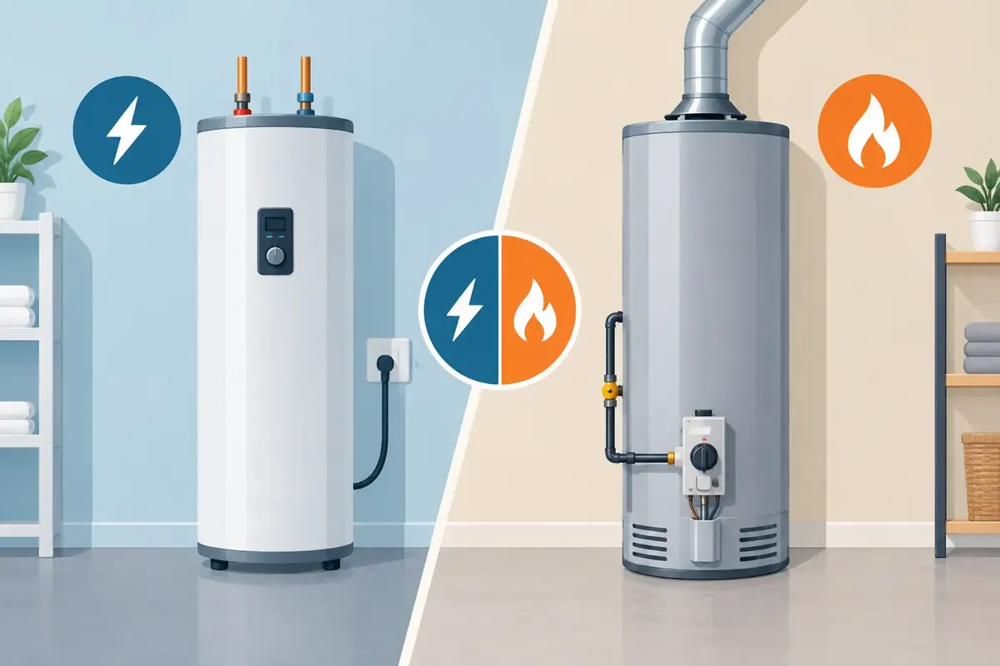

A water heater rarely fails at a convenient time. When the shower turns cold or a tank begins leaking, the decision between electric versus gas water heaters can feel urgent. The right answer is not simply whichever model costs less at the store. Your home's utilities, household demand, installation conditions, and long-term energy costs all matter.
For many Middle Tennessee homes, replacing a water heater is also a chance to correct an undersized tank, aging vent connection, inadequate drain pan, or unsafe installation. A qualified plumber can help you look beyond the equipment label and choose a system that serves your family reliably.
Electric Versus Gas Water Heaters: The Main Difference
Electric tank water heaters use one or two heating elements inside the tank. Electricity passes through those elements to heat the stored water. They do not need a gas line, combustion air, or an exhaust vent, which makes their basic installation straightforward in many homes.
Gas water heaters use a burner below the tank. Natural gas, or propane in some locations, heats the water through a flue running through the center of the tank. Because combustion creates exhaust, a gas unit must vent safely outside. The venting method may be a standard metal flue, a powered vent system, or a direct-vent configuration.
Neither fuel type is automatically best. If your home already has a properly sized gas line and safe venting in place, a gas replacement may be practical. If your home has no gas service, or if upgrading old venting would add significant work, electric may be the simpler and more cost-effective path.
Upfront Cost and Operating Cost Are Different Questions
An electric water heater often has a lower equipment and installation cost, especially when it replaces an existing electric unit. There is no gas piping to run and no vent system to install or repair. That can make electric a sensible choice for a rental property, a garage conversion, or a home where the existing setup is already designed for electric service.
Gas water heaters can cost more to install because the job may involve gas piping, shutoff valves, venting, combustion-air requirements, and permit considerations. Power-vent and direct-vent models typically cost more than standard atmospheric-vent models, but they can solve placement challenges where a traditional chimney-style vent is not available.
Monthly operating cost deserves equal attention. Natural gas has often been less expensive than electricity for heating water in many areas, so a gas tank may cost less to operate over time. Rates change, however, and actual savings depend on local utility pricing, how much hot water your household uses, and the efficiency of the particular model.
A lower purchase price does not always mean lower ownership cost. At the same time, a gas unit with a complicated installation is not automatically a better investment just because gas can be economical. Request clear, upfront pricing that separates the equipment, required installation work, and any recommended code or safety upgrades.
Recovery Rate Matters for Busy Households
Recovery rate is the amount of hot water a heater can produce in a given period after the tank has been used. This is where gas water heaters often have an advantage. Their burners generally heat a depleted tank faster than standard electric elements.
That quicker recovery can matter in a home with several people showering back-to-back, a large soaking tub, frequent laundry, or a commercial restroom and break-room demand. A properly sized gas tank can restore usable hot water sooner between high-demand periods.
Electric models can still serve a family well when the tank size is appropriate. A larger electric tank may be the better answer for a household with predictable but heavy morning demand. The key is not choosing based on the number of bedrooms alone. A plumber should consider how many people live in the home, when they use hot water, the number of bathrooms, and high-demand fixtures or appliances.
For customers who want a different kind of efficiency, heat-pump water heaters are worth discussing. They use electricity but move heat from surrounding air rather than creating all the heat with electric elements. They can reduce operating costs substantially in the right space, though they need adequate room, appropriate temperatures, and proper condensate drainage.
Installation, Safety, and Power-Outage Considerations
Gas water heaters require careful installation because fuel combustion is involved. The gas connection, shutoff valve, vent slope, draft, clearances, and combustion air all need to be correct. Improper venting can create serious carbon monoxide risks, while an improperly connected gas line can leak.
Electric water heaters eliminate combustion and venting concerns, but they still require proper electrical work. Most standard electric tank water heaters need a dedicated 240-volt circuit. An older electrical panel may not have the capacity or available space needed for a new unit, particularly when a homeowner is switching from gas to electric.
Power outages create another practical difference. A conventional electric water heater cannot heat new water without electricity. Many conventional atmospheric-vent gas water heaters can continue operating during an outage because their pilot and controls do not rely on household power. Power-vent gas units, however, need electricity for the blower, so they will not operate when the power is out.
Every installation should also include appropriate protection from water damage. Depending on the location and local requirements, that may mean a drain pan, properly routed discharge piping from the temperature-and-pressure relief valve, an expansion tank, and a water alarm or smart shutoff device. These details are easy to overlook until a failed tank sends water across a finished floor.
When Electric Is the Better Choice
Electric is often the better fit when a home does not have gas service, when venting a gas appliance would be difficult, or when the existing electrical infrastructure is ready for the load. It can also be a practical choice in a closet or interior location where safely venting combustion gases would require extensive changes.
For landlords and property owners, electric units can offer a simpler replacement path and fewer combustion-related maintenance concerns. They are also quiet and have fewer components associated with gas ignition and venting. That does not mean they are maintenance-free. Sediment, aging elements, thermostat failures, and leaks can still shorten their useful life.
When Gas Is the Better Choice
Gas can be a strong option for larger households that use a lot of hot water in concentrated periods. Its faster recovery rate can reduce the frustration of waiting for a tank to catch up after multiple showers. It may also be attractive where natural gas is already available and local rates make it economical.
A like-for-like gas replacement is usually the most straightforward scenario, provided the existing venting and gas piping are in good condition and meet current requirements. If your current gas heater is old, do not assume a new unit can simply be connected to every existing component. Changes in equipment design, vent size, and code requirements may affect the project.
For commercial properties, the decision may depend on peak demand more than fuel preference. Restaurants, salons, offices, and multi-tenant buildings can place very different loads on a water-heating system. A professional assessment can determine whether a larger tank, multiple units, tankless equipment, or a recirculation system is the better solution.
Do Not Choose by Fuel Type Alone
The best replacement is a properly sized, safely installed water heater that fits the way your property uses hot water. Before making a decision, consider the age and condition of the current unit, available utilities, household demand, venting, electrical capacity, installation location, and the total cost over the expected life of the equipment.
Angle Stop Plumbing helps Middle Tennessee homeowners and property managers weigh those details with straightforward recommendations, respectful service, and upfront pricing. Whether your current water heater is leaking, producing rusty water, making unusual noises, or simply no longer keeping up, a timely inspection can help you make a calm decision before a small issue becomes a no-hot-water emergency.
A dependable water heater should fade into the background of family life. Choosing the right one now gives your home a better chance of keeping mornings warm, laundry moving, and daily routines on track.